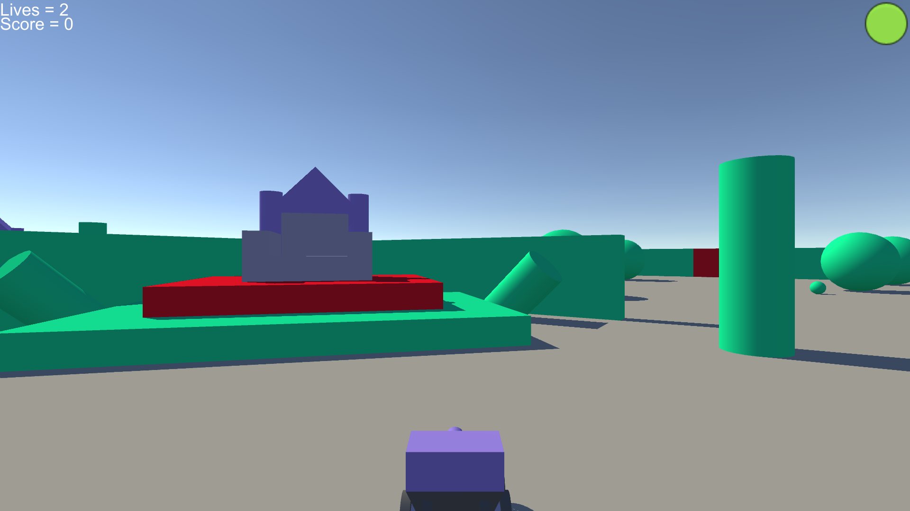

Robots to Arms
My first game, as well as the only game I have made in Unreal
Find it here!
My first game, as well as the only game I have made in Unreal
Find it here!
My first game in C based languages. The game is another simple maze type with three keys, but made in Unity.
Find it here!
The standard tank game that every student creates during their time in UAT. Made in Unity, the game is simple and requires you to find the rogue tanks in a randomly generated map.
Find it here!

If you want to see more of my work, or find more details beyond this project, you can find them at:
My Graduation Portfolio Site.